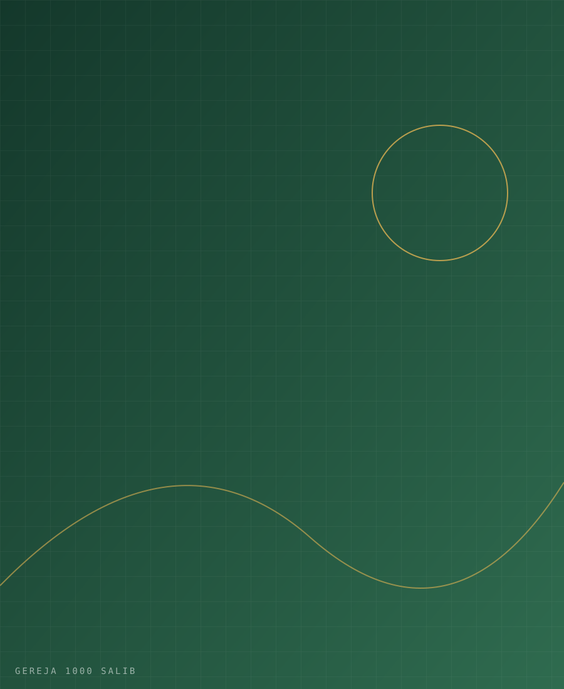
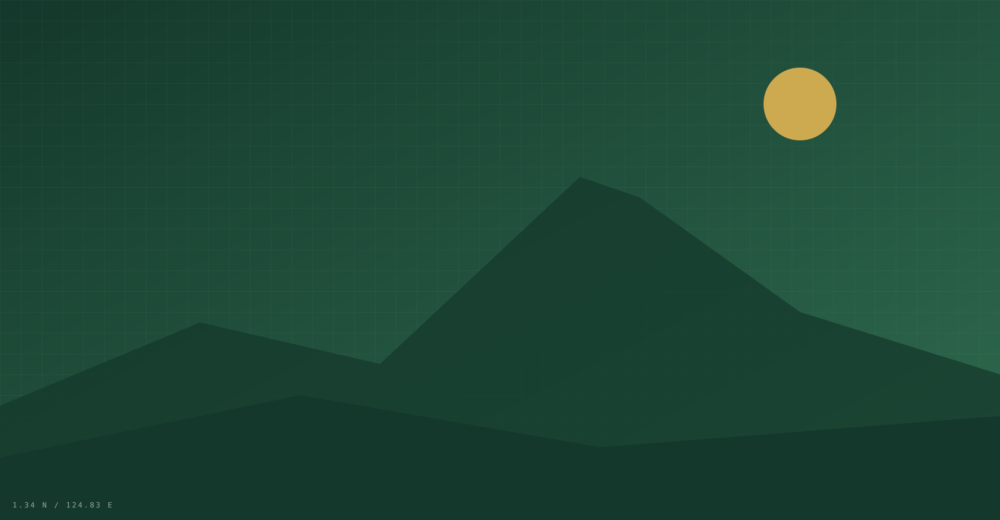
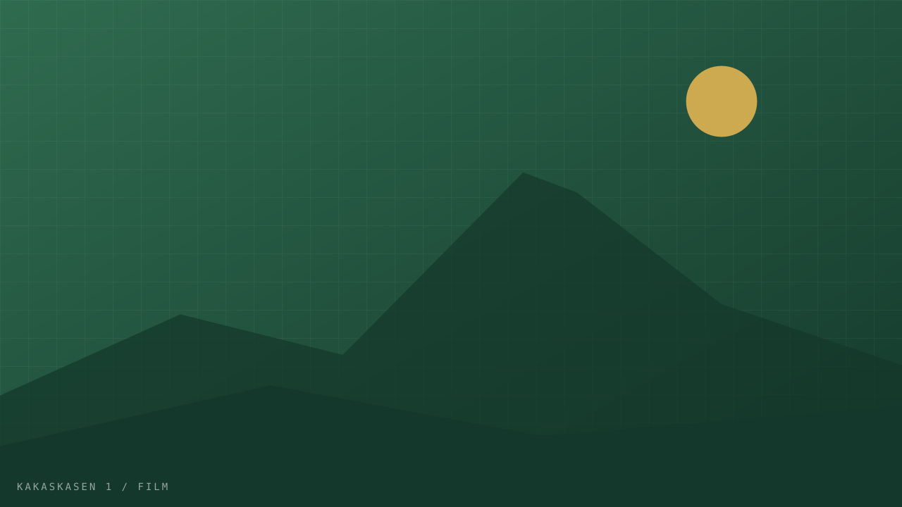
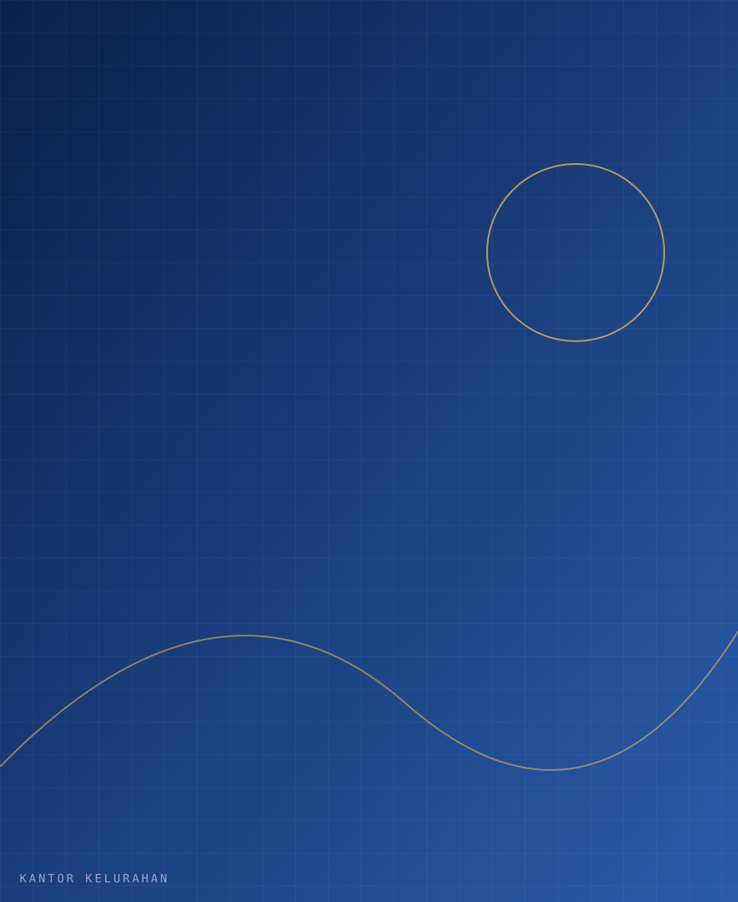

Landmark
Gereja 1000 Salib St. Fransiskus Xaverius
Salah satu ikon yang dikenal dari kawasan Kakaskasen.
Lihat detail →Kelurahan di Tomohon Utara dengan udara sejuk, pemandangan Gunung Lokon, dan deretan tempat singgah yang dikenal pengunjung.
Profil
Kakaskasen 1 adalah salah satu kelurahan di Kecamatan Tomohon Utara, Kota Tomohon, Sulawesi Utara. Kawasan ini terbagi dalam 10 lingkungan.
Portal ini hadir sebagai media informasi digital yang memperkenalkan lingkungan, tempat, aktivitas, dan potensi Kakaskasen 1 melalui foto, video, dan peta.
Tempat
Ruang singgah, penginapan, oleh-oleh, hingga landmark yang berada di atau terkait langsung dengan Kakaskasen 1. Pilih kategori, lalu buka detailnya.
Daftar tempat tidak tampil. Jalankan lewat Live Server, GitHub Pages, atau hosting; jangan buka file langsung dari folder.
Ikon Kakaskasen
Gereja 1000 Salib dan pemandangan Gunung Lokon menjadi wajah kawasan ini.

Salah satu ikon yang dikenal dari kawasan Kakaskasen.
Lihat detail →
Pemandangan Gunung Lokon dari kawasan Kakaskasen 1.
Sekilas Kakaskasen 1
Lingkungan, tempat, suasana, dan pemandangan yang membentuk kehidupan kawasan ini.

Peta
Pilih titik untuk melihat lokasinya di peta. Ketuk "Seluruh Kakaskasen 1" untuk kembali ke tampilan kawasan.
Fasilitas

Pemerintahan
Kantor kelurahan menjadi titik acuan dan pusat pelayanan bagi masyarakat Kakaskasen 1, Tomohon Utara.
Petunjuk arah